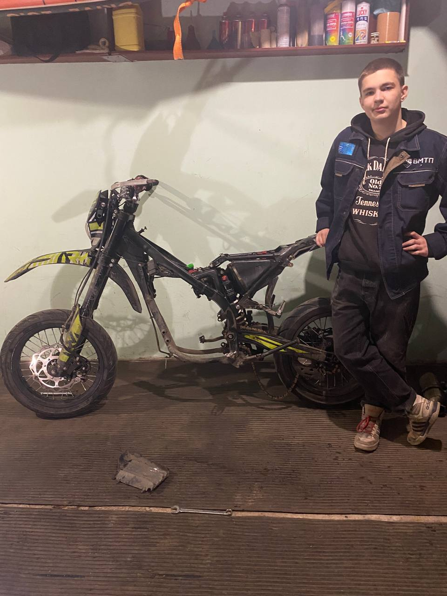
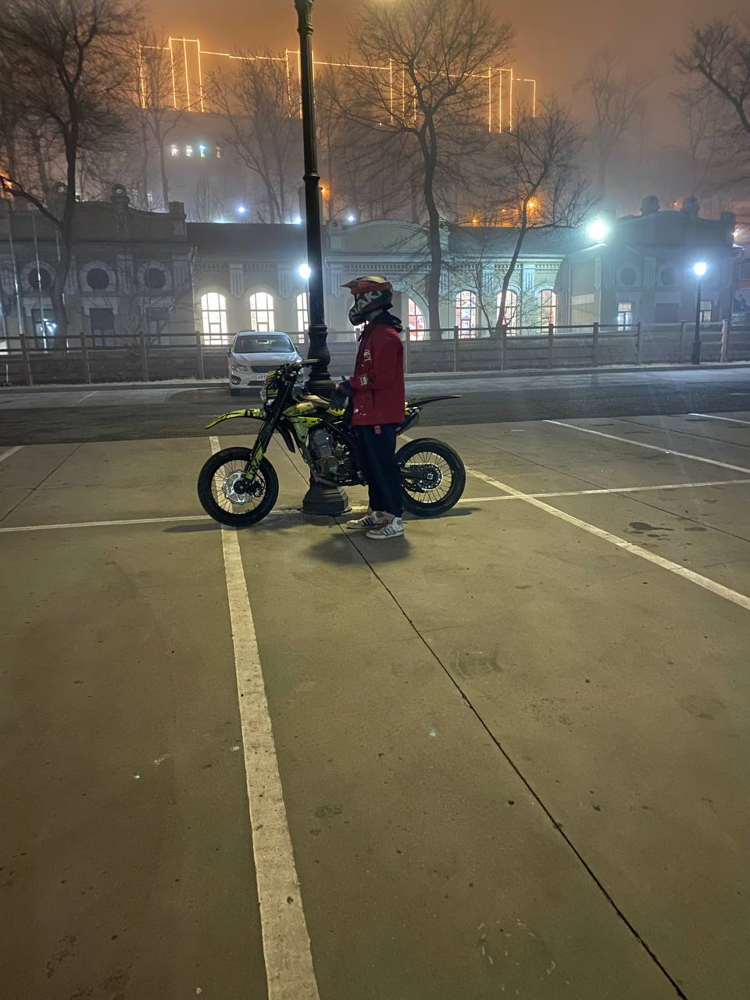
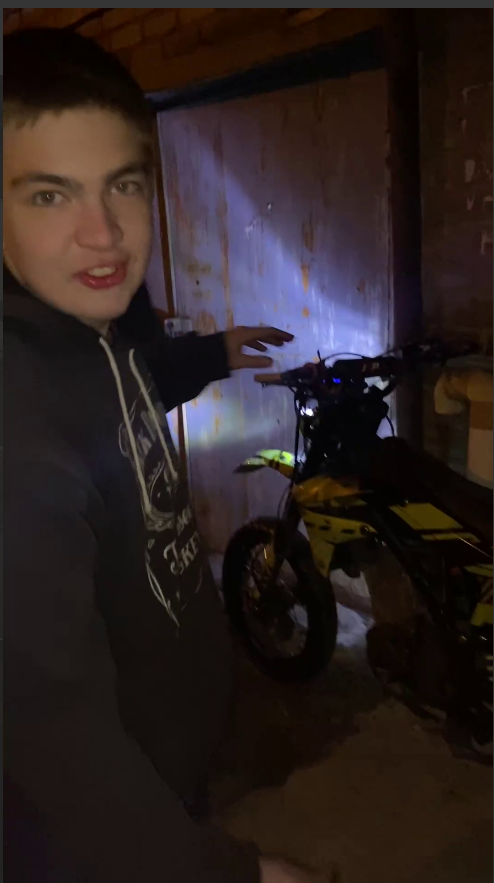

Фото & Видео из гаража
Без пафоса, зато с приколами
Ловите мой ракурс
Да, я знаю, что делаю. Нет, я не знаю, где второй носок.

Либо щас починю, либо начну продавать запчасти.

Главное – мотик завелся. Остальное – мелочи.

Он точно улыбается под шлемом. Точно.
Движухи ради движухи
Экономия на воронке – 50₽. Уборка после – 2 часа.
В реальном времени это выглядело грустнее.
Тормоза работают. Штаны – нет.
Вот ради этого мы и работаем.
Если ждали крутых монтажей – вы не туда попали. Зато честно.